Only you know the key to our story 💌
Incorrect PIN — try again, love.
To the man who holds my heart, my happiness, my peace, and my forever
— You are the most beautiful blessing I have ever received —
Hello, Mi amor. 🌸
I made this website just for you — filled with our memories, our journey, and all the love I hold for you. Every page is written from my heart, just to remind you how special you are to me, and how grateful I am that you walked into my life.
Take your time as you read through it. There are beautiful moments we shared, words I sometimes find hard to say out loud, and promises I intend to keep forever. This is our story — the story of us.
Are you ready to begin? 💌
I created this website with every beat of my heart, just for you. It is more than just lines of code and colors on a screen — it is a piece of my heart, woven together with love, care, and all the feelings I sometimes find too difficult to say out loud. I wanted to make something that would stay with you forever, something you can revisit whenever you miss me, something that will remind you again and again of how special you are to me, how deeply I love you, and how incredibly grateful I am that you walked into my life and chose to stay.
Before I met you, love was something I only read about or heard from others — something beautiful, yes, but something I thought might never happen to me in such a pure, gentle, and breathtaking way. But then you came. You walked in at exactly the right moment, when I least expected it but needed it most, and everything changed. Suddenly, the world felt brighter. Days felt warmer. Even the quietest moments felt full of meaning and joy. You didn't just become part of my life — you became the best part of it. You became my safe place, my happiest thought, my home.
This little website holds our story — from the very beginning, through all the beautiful moments we have shared, and looking forward to all the wonderful days we have yet to create together. Here you will find memories captured in photographs, words written straight from my soul, and promises I intend to keep for the rest of my life. Every page carries a piece of my heart. Every message is something I truly mean. Every photo represents a memory I treasure, and every word is my way of telling you — over and over again — that you are loved, cherished, valued, and adored beyond measure.
So take your time, my love. Read it slowly. Click through the pages. And remember — every button, every design, every color, and every word here was made with you in mind. It is all for you. Because you deserve to be reminded every single day that you are the greatest thing that has ever happened to me. You are my favorite person, my greatest blessing, my sweetest dream, and the most beautiful plot twist life has ever given me.
I love you. Today. Tomorrow. And always. 💌
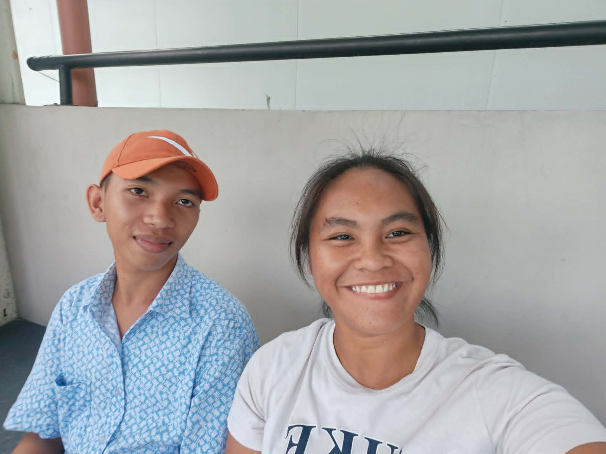
Remember this love? Within 2 years na magkausap tayo, marami rin tayong pinagdaanan — mga panahong malayo tayo, mga kwentuhan sa gabi, at mga pangarap na sabay nating hinahangad. Ito ang first meet natin, March 11, 2025, at ito rin yung NCAA namin — NCAA 100. Sobrang excited tayo pareho noon, at puno pa tayo ng kahihiyan kasi first meet pa lang natin. Sumabay pa nga yung mga teammates at coach ko, at first time ka rin nilang nakita — sa mismong araw na naging totoo na ang lahat ng hinihintay ko.
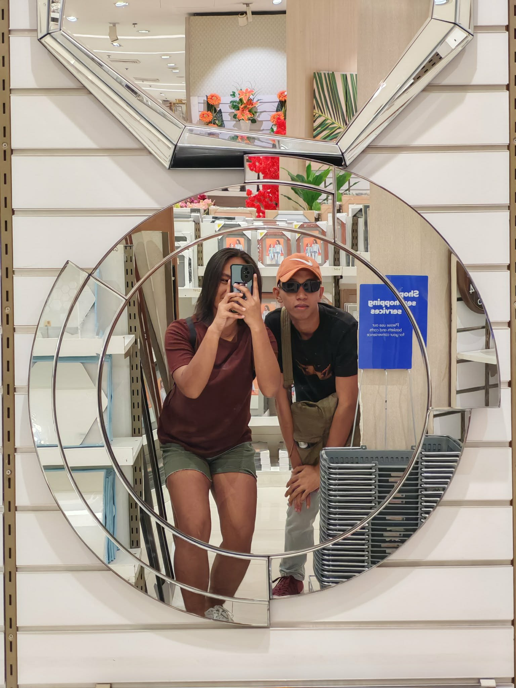
Ito yung after laro namin, lumabas at gumala tayo. Sobrang saya ko rito, kasi after such a long time, finally nagkita na jud ta. Nakita ko ang ngiti mo, naramdaman ko ang init ng pagtanggap mo, at doon ko naisip: mao na ni ang sinugdanan sa tanan. Kahit nahihiya pa tayo noon, kahit maikli lang ang oras natin, nasa puso ko na — ikaw ang kwento na hihintayin ko habambuhay (kahit nanliligaw ka pa lang sa akin noon). From that day on, every moment, every win, every challenge — gusto ko ikaw yung kasama ko. Thank you for coming into my life, thank you for all your effort, and thank you kasi hanggang ngayon, ikaw pa rin yung best thing na nangyari sa buhay ko.
Just seeing your smile makes every single day worth living. You are my sunshine on cloudy days, my comfort on hard days, and my joy on all days. Thank you for making life this beautiful.
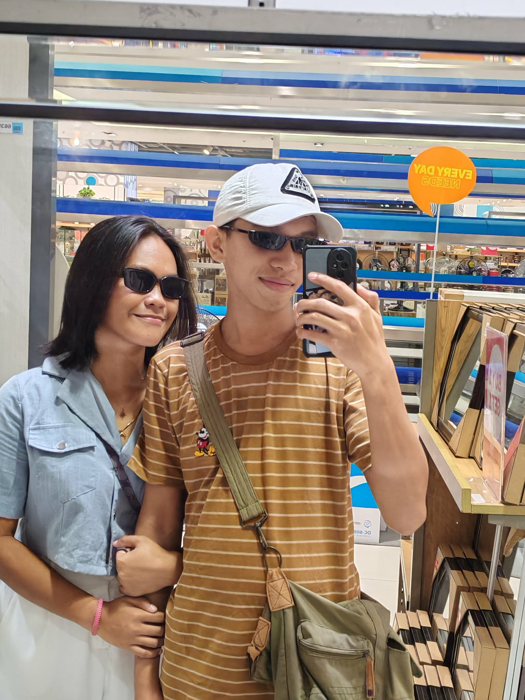
Ito ang 2nd meet natin ito nung March 30, 2025. Dito rin natin ginawa ang late birthday celebration mo. Nahihiya pa rin tayo nang konti noon, pero puno na tayo ng saya at kilig. Even though we were still a little shy back then, every moment felt so warm and special to me. It was simple, yet it became one of my most cherished memories — because I got to spend it with you. Seeing you happy that day meant more to me than anything else. Little did I know then, that you would become the most precious part of my life, and the person I want to celebrate every single moment with, now and always. Thank you for letting me be part of your day, and thank you for being you.
It doesn't matter where we go or what we do. As long as I am with you, I am home. You are my safe place, my peace, and my rest. With you, even silence feels like the sweetest melody.
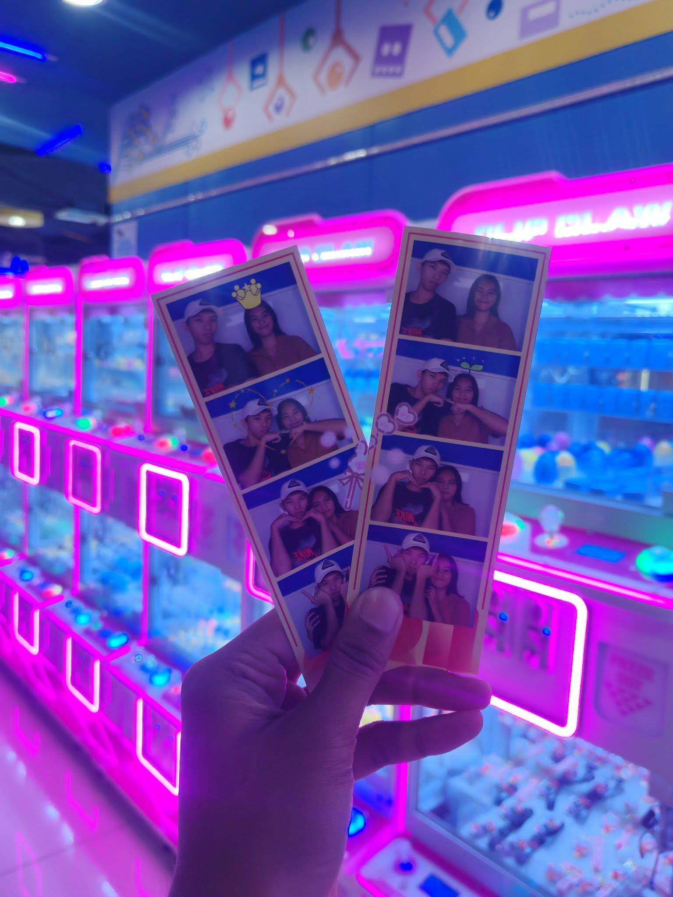
Ito naman ang first photobooth picture natin. Our very first set of memories captured together — every frame holds so much joy, kilig, and love. We were still a little shy back then, but look how happy we are, di ba? Every smile, every pose, every little moment here is priceless to me. Time flies so fast indeed, but these memories stay locked in my heart forever. Thank you for making every simple moment magical and beautiful. This is just the start of so many more photos, memories, and adventures we’ll build together. I love you, always and endlessly.
Every moment spent with you becomes my favorite memory. Time moves so fast when I'm with you, yet these moments stay in my heart forever. Thank you for filling my life with such beauty.
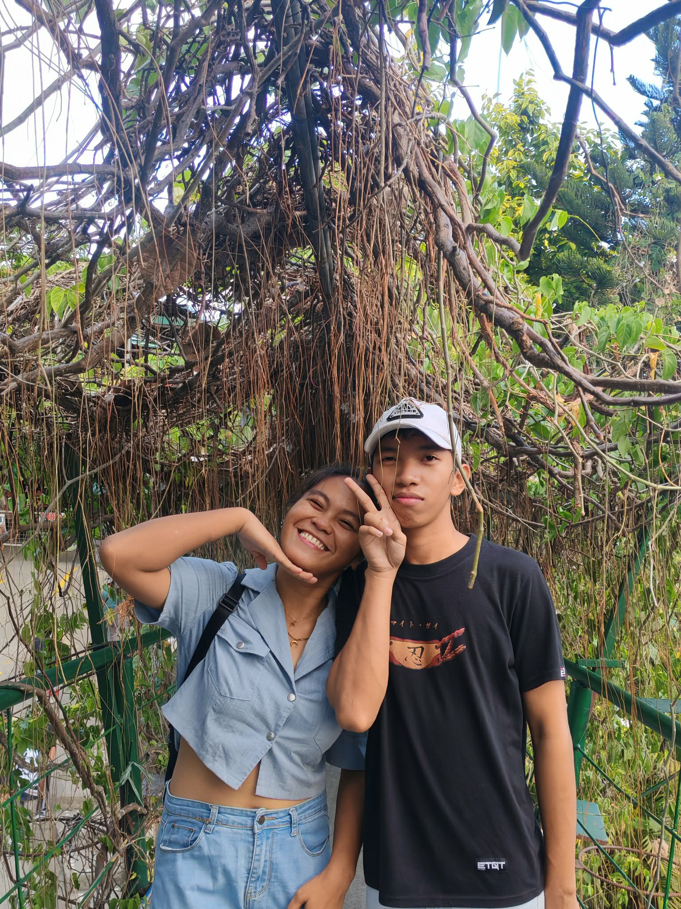
Ito naman noong May 1, 2025 — Labor Day. Ito yung nagpunta at gumala tayo sa Antipolo kasama sina Ate Lucy at Kuya Oliver — our sweet double date. Sobrang saya ko rin dito, kasi nakapag-spend tayo ng time at nakasama kita. Simple lang ang date nato, but every second was full of joy, laughter, and happy memories.
Every picture tells a story, and this one reminds me how blessed I am — not just to have you, but to share these beautiful moments with you and our friends. You truly are my greatest treasure. Thank you for every trip, every laugh, every simple day we spend together. Maski asa ta muadto, basta ikaw akong kauban, it always becomes the best place and the best memory. More adventures and trips to come, my love. Gihigugma ko ikaw, always and forever.
Every picture tells a story, and every story reminds me of how blessed I am to be loved by you. You are my greatest treasure.
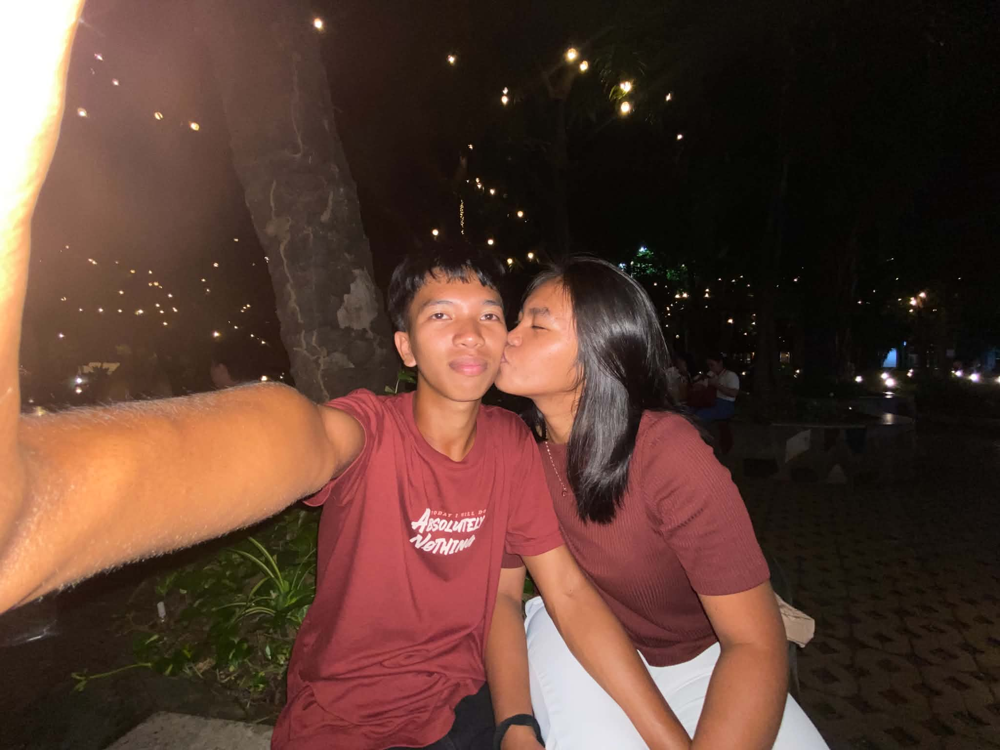
This was our very first time seeing each other again after I went on vacation in Davao and just came back here to Manila. It felt like forever while we were apart, and every single day away from you felt so long and quiet. I missed you so much — every moment, every little thing reminded me of you. But the moment I saw you again, all the tiredness and longing just vanished in an instant. Right then, I knew for sure: no matter how far apart we are, no matter where life takes us, you will always be the one my heart runs back to.
In every season, in every moment — my heart always chooses you. Nothing changes that. You are my today and all of my tomorrows.
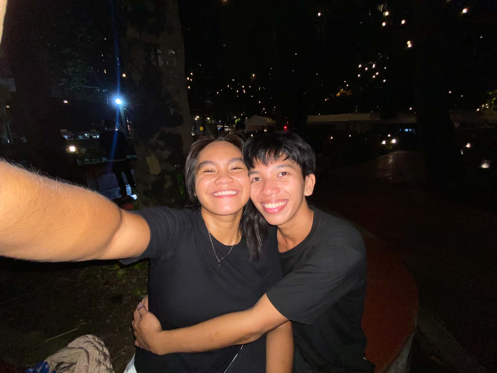
The closer I get to you, the more I realize how much I need you. You complete me in every way. One more page, and then — everything. Every hug feels like the safest place I’ve ever known. Being near you makes every moment warm and full of love. You are the peace and joy my heart always longs for. No matter where we go, being close to you is all I want. Every second with you is a beautiful dream I never want to end.
Looking back at all these beautiful moments — my heart overflows with gratitude. Thank you for making life so sweet and wonderful.
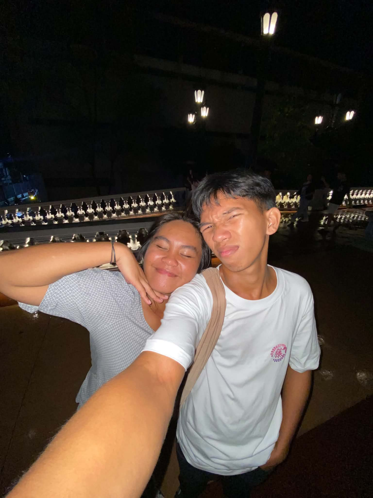
Looking back at all these beautiful moments — my heart overflows with gratitude. Thank you for making life so sweet and wonderful.
Every memory with you is pure joy. You make everything sweeter and brighter. These moments stay forever in my heart. I love every second spent with you. Thank you for being my sweetest blessing.
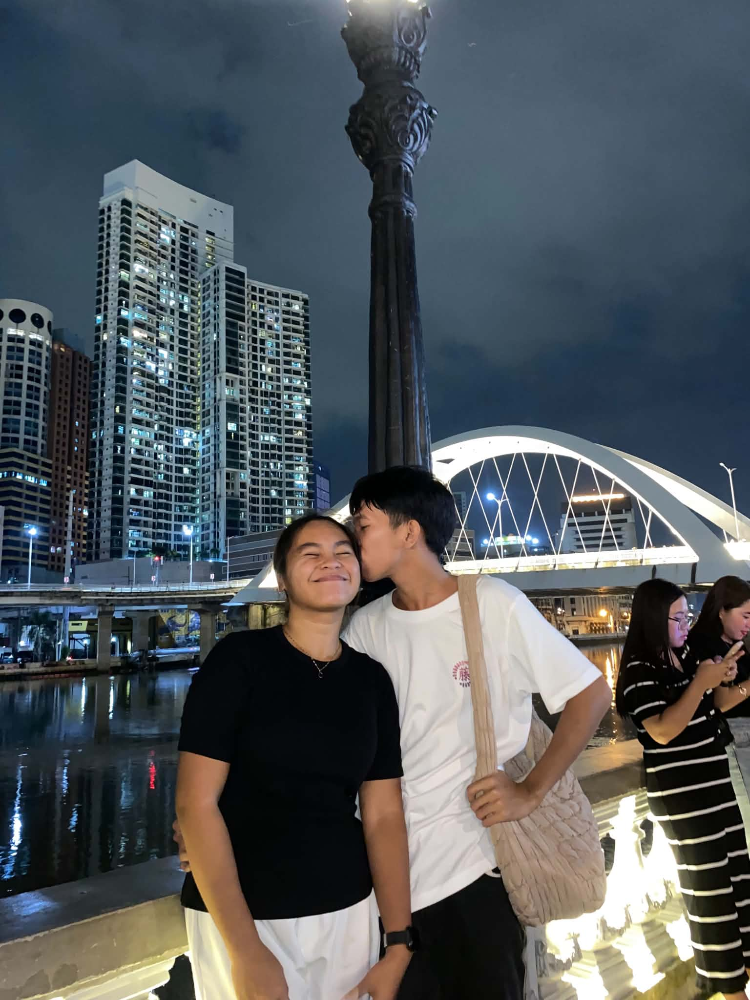
Ito yung kasama natin ang mga kaibigan natin — nag-double date tayo, nag date sa National Museum at sa Binondo Esplanade. It was such a simple yet joyful day. Exploring new places feels extra special because I get to share them with you. Every sight becomes brighter, every moment more meaningful, and every laugh stays etched deep in my heart. Even with friends around, my eyes and heart always find their way back to you. Every outing adds another lovely chapter to our story I will keep forever. I realized again: wherever we go, as long as I’m with you, it turns into the best adventure. Thank you for every memory we build, every smile we share, and every path we walk together. We are only halfway to forever, and I’d choose this journey with you a thousand times over.
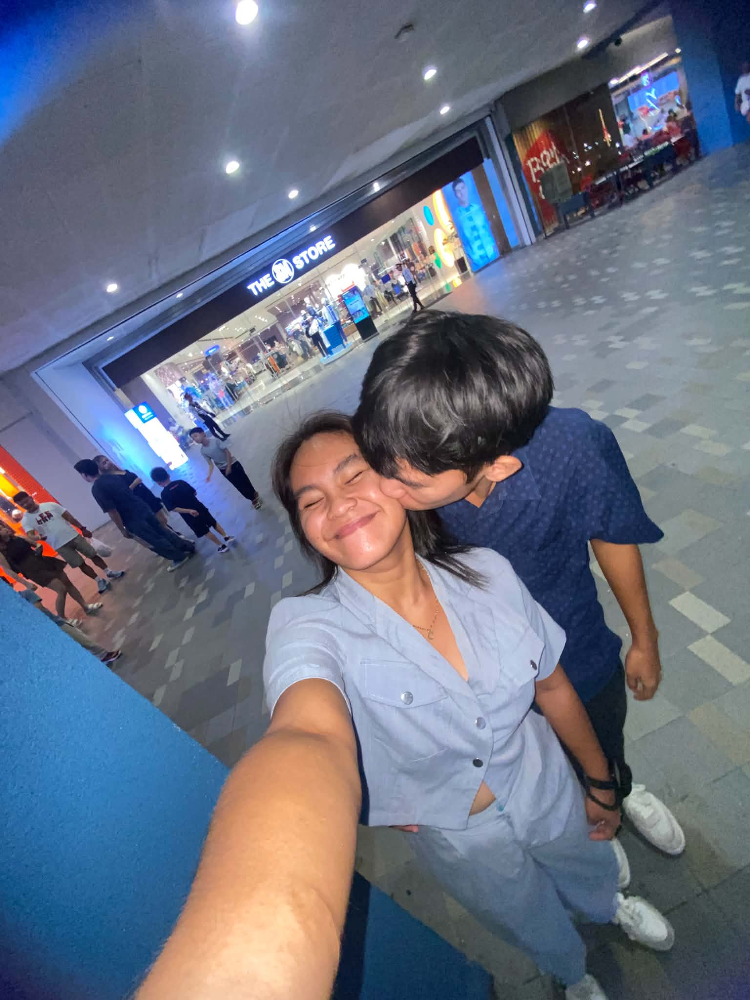
This was our day out at MOA, together with my teammate again — another lovely double date. On our way home though, we had a small misunderstanding.
Happiness looks so much like you. Everything about you — your laugh, your kindness, your heart — is pure magic to me.
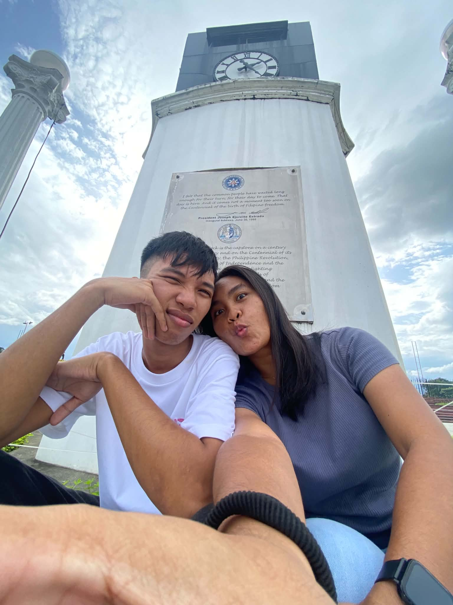
Ito naman yung sinamahan mo ako sa QC para sa pag-check-up ng likod ko. To be honest, I felt anxious and worried before we went — but the moment you held my hand and told me you’d stay right beside me, everything felt lighter. You never left my side for a second; you listened carefully, supported me in every move, and calmed me down whenever you saw I was nervous. I could feel your care and love so deeply — not just in words, but in every action and every bit of attention you gave me.
After our appointment, instead of going straight home, nag date pa ta sa Kilometer Zero sa Luneta Park, and we spent the rest of the day walking, talking, and enjoying each other’s company. The scenery was beautiful, the sky wide and bright, the breeze soft and peaceful — but truly, the most wonderful sight I saw that day was you. As we walked and laughed together, I realized how incredibly blessed I am. Because of you, even days filled with worry or discomfort turn into something warm and meaningful.
No matter how stormy life gets — you are my calm, my shelter, my peace. With you, I am always safe and loved. Thank you for being my home.
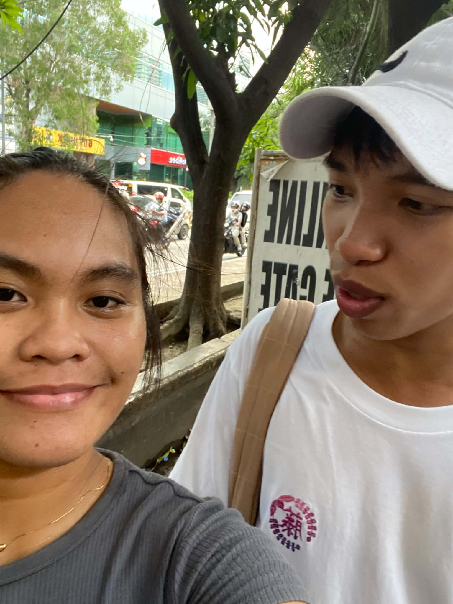
This was us on our way home, right after my check-up and our lovely date together. After going through everything, after you took care of me and we shared such beautiful moments, this was the quiet, peaceful ride back — tired, yet our hearts full of joy and gratitude.
Every day I love you more than the day before. My love for you grows deeper, stronger, and more beautiful with every heartbeat.
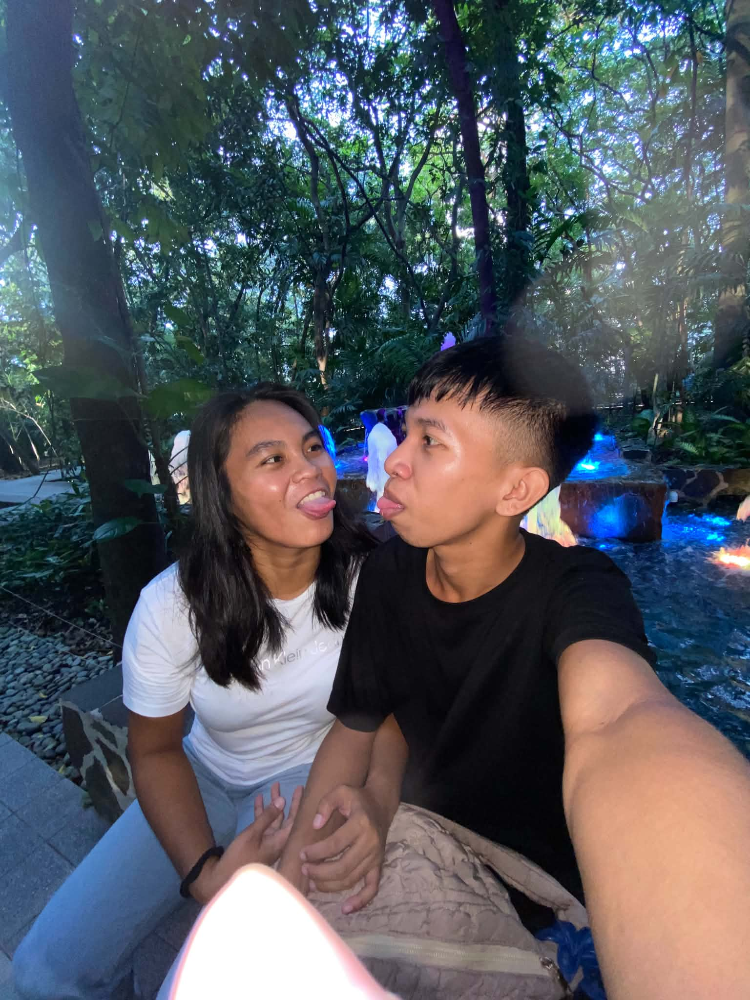
This photo was taken on the very day I had my back surgery. You were right there with me every single second — holding me up, caring for me, and never once letting me feel alone or neglected.
You took charge of every document and paperwork, running back and forth just to make sure everything was settled. Whenever I needed medicine or supplies, you went out and got them without hesitation, even if it meant walking far, going back and forth, and exhausting yourself. You were tired, your body was worn out from all the running around and waiting, yet you never gave up on me — not for a moment. You never complained, never stepped back, never said you had enough. You just stayed, and gave, and loved me through every hard part.
Paghuman sa opera nako, nag-date na sab ta sa Arroceros Forest Park — kahit kakatapos lang ng operasyon ko at mahina pa ako. Gibuhat ni nimo para makarest kog tarong ug makapagrest sa malinawong palibot. Sa bawat hakbang natin, hawak-hawak mo ako, binabantayan ang bawat kilos, inalalayan nang maingat — parang ako ang pinakamahalagang kayamanan na kailangang ingatan. You walked slowly just for me, supported my weight, and made sure every moment felt safe and warm.
You taught me that real love isn’t only about happy days and sweet moments. It’s about showing up when things are hard, when I am weak, when I need someone to carry me through. You became my strength, my helper, my comfort, and my home. Every time you ran errands, every trip you made, every careful touch and patient step — all of these are etched forever in my heart. You didn’t just stay with me that day; you walked every hard part right beside me.
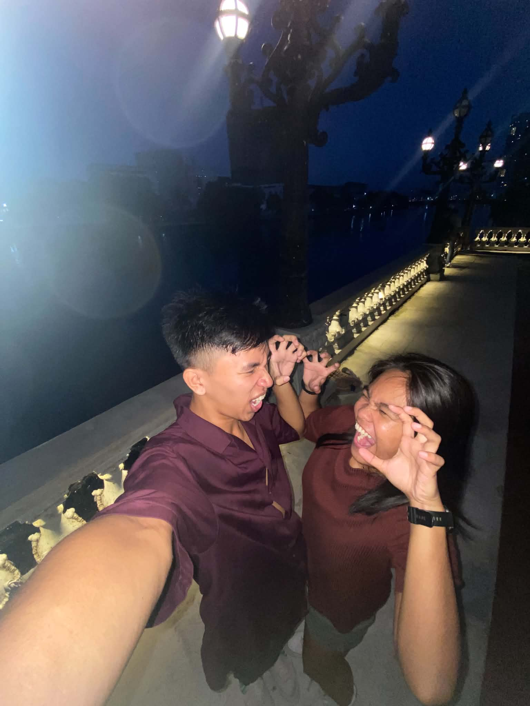
Kani kay nangaon ta sa gawas ug nag-date na sab ta sa Binondo Esplanade. Ito yung araw na kumain tayo sa labas at muling naglakad at nagpalipas ng oras sa magandang lugar na ito — paborito nating puntahan, laging puno ng kwento at tamis ng ating pagmamahal.
You are the dream I never dared to dream, and the reality I never want to wake up from. You are everything I ever prayed for.
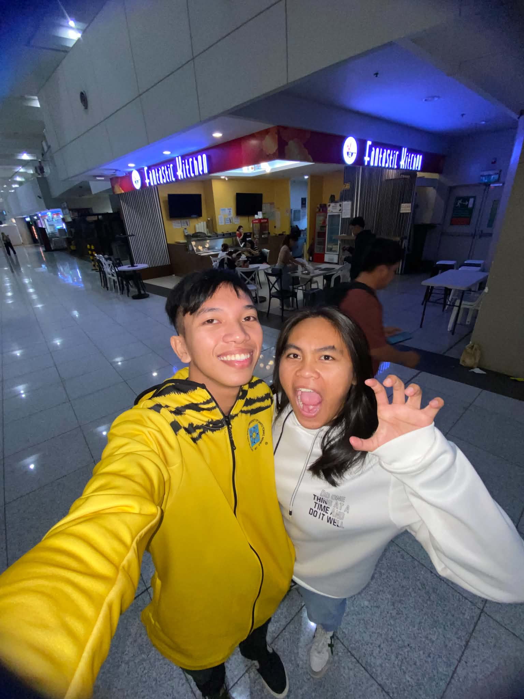
This was our most excited and special day — December 19, 2025, the day of our flight to Davao. This photo was taken here at NAIA, just before our departure. And on this very day, I would finally introduce you to my parents and my entire family. You were filled with excitement, yet you felt nervous too — because at last, you were going to see them and get to know the people who mean so much to me. We were both so eager and joyful, our hearts racing with pure happiness and hopeful expectation.
Hand in hand, heart to heart — wherever life takes us, I want to be right there with you. Through everything, always together.
Mahalaga ang araw na ito — dito mo papasok nang lubusan sa buhay ko, at sa mga taong mahal ko. Hawak-kamay tayong lalakbayin ang lahat — kahit saan man tayo dalhin ng tadhana, magkasama tayo. Gihigugma ko ikaw — kanunay ug sa kanunay, always together.
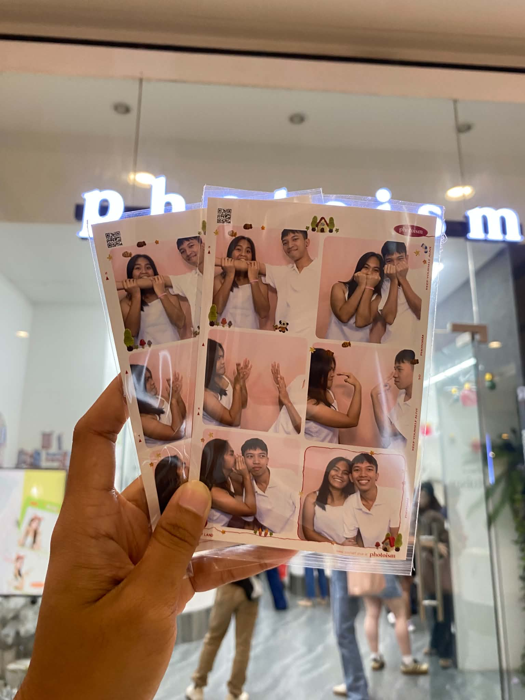
This was taken before the New Year — our very first photobooth pictures together in Davao. Every frame holds our silly poses, sweet smiles, and that happy, giddy feeling we had as we made these memories side by side. Each strip became a precious keepsake — something we can hold, keep, and look back on, forever reminding us of this beautiful time we shared.
You are the light that guides me, the love that warms me, the hope that keeps me going.
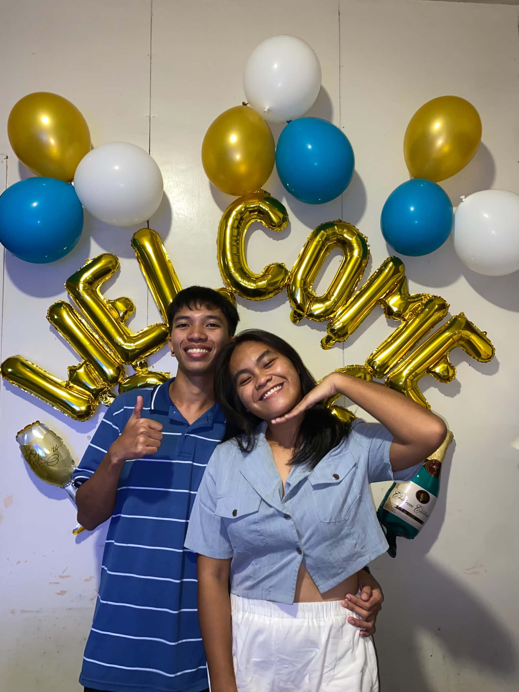
This photo was taken on New Year’s Day. We were both overflowing with joy and excitement — because this was our very first time celebrating the New Year together, and what made it even more special was having my family there, sharing this beautiful moment with us. Every smile, every cheer, every sparkle in the air felt twice as bright because I got to welcome a brand new year right by your side, surrounded by the people I love most.
There is no one like you. You are one of a kind — rare, precious, and irreplaceable. I am the luckiest person alive to call you mine.
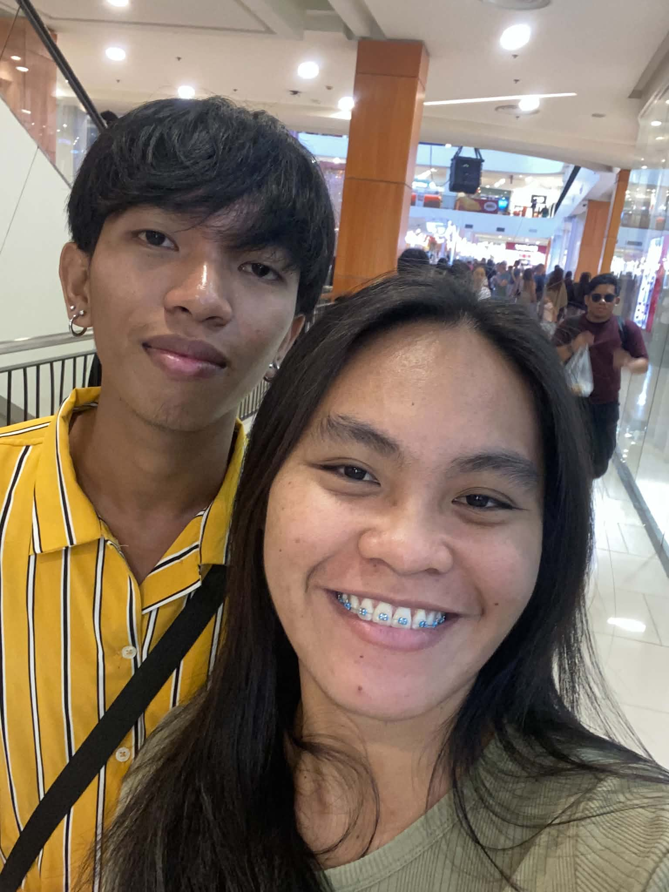
This photo was taken on June 3rd, when I arrived back in Davao for vacation. We went on a date right away at Abreeza. We were so incredibly happy — because after months of being apart in a long-distance relationship, we finally met again and were together once more.
Those months apart taught me so much — they taught me how to wait with hope, how to love even when you’re not right beside me, and how precious every second together truly is. Every morning I woke up thinking of you, every night I fell asleep wishing you were here. Every mile between us felt heavy, but every promise we made kept me going strong. And then this day came — June 3rd — and suddenly, all the waiting melted away into the sweetest reality. Walking through the mall with you, laughing, holding hands, just being near you — every little thing felt like a gift I had longed for. It wasn’t just a simple date; it was the beautiful reward for every moment of patience, every word of love, and every prayer I whispered to God.
I looked at you and thought: this is worth everything. Every day apart made my love grow deeper, my faith stronger, and my gratitude bigger. Because through it all, we stayed true, we stayed close at heart, and we never let distance weaken what we have. And now that we are together again, I treasure every breath, every smile, every glance — knowing exactly how special and rare this connection is. You are truly God’s greatest gift to me — the answer to every prayer I’ve ever lifted up, the dream I dared not hope for, and the love I will guard forever.
Thank you for staying. Thank you for waiting. Thank you for loving me faithfully even when we were far apart. Thank you for making every reunion feel like coming home. No matter how long the distance, no matter how hard the wait — I will always choose you, I will always wait for you, and I will always love you. You are my answered prayer, my greatest blessing, and the best thing that ever happened to me. I love you more than every mile we crossed, more than every day we waited, more than every joy we share — today, always, and forever.
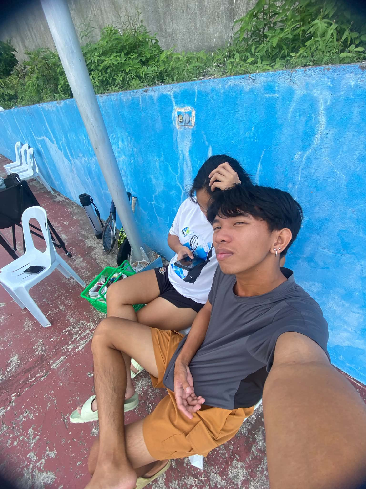
So this one naman is when we went with Ate Ebeb to help her with her coaching! It was such a simple day lang, but like, super meaningful jud kay we got to help together. And being with you anywhere literally makes everything so much better and fun jud. promise! Even if we were just helping out, every moment felt special kasi you were right there beside me.
Twenty beautiful memories down, and a lifetime more to go. This journey with you is my favorite adventure. Let's keep making history together.
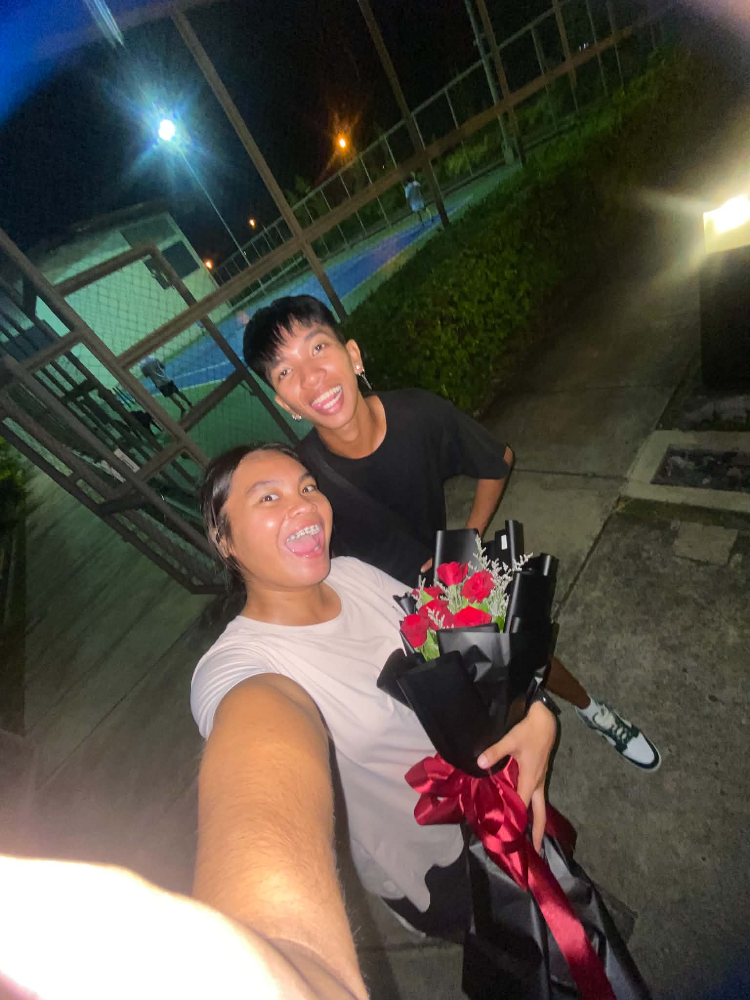
This was during my Ate’s birthday celebration! We were at the tennis court that day because we held an open play activity, and we helped out and assisted with coaching too. I was so incredibly happy there — not just because of the event itself, but because you were right there beside me, together with my whole family. We got really tired after all the running around and helping out, but honestly? We enjoyed every single second of it, promise!
We stayed until late at night before heading home, and this photo has become one of our absolute favorites — it holds so much joy, laughter, and beautiful memories we made together that whole day.
Home is not a place — it is a person. And to me, that person is you. Wherever you are, I am home. Always.
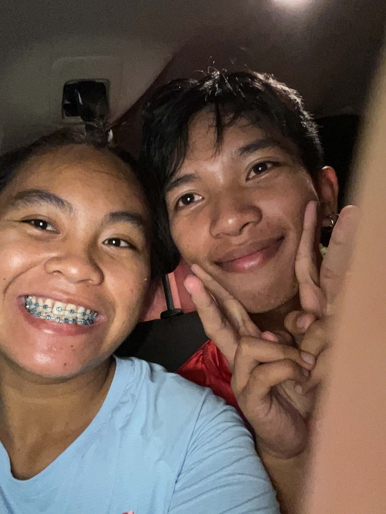
This was taken while we were on our way home after another open play activity! While waiting for Ate and Kuya to catch up, we took this sweet photo together first — simple, quick, but so full of joy and love. Just us, happy and tired from all the fun and work, yet still wanting to capture every little moment we have side by side. Every time I look at this, I remember how even the shortest pauses and ordinary moments become special just because you are with me.
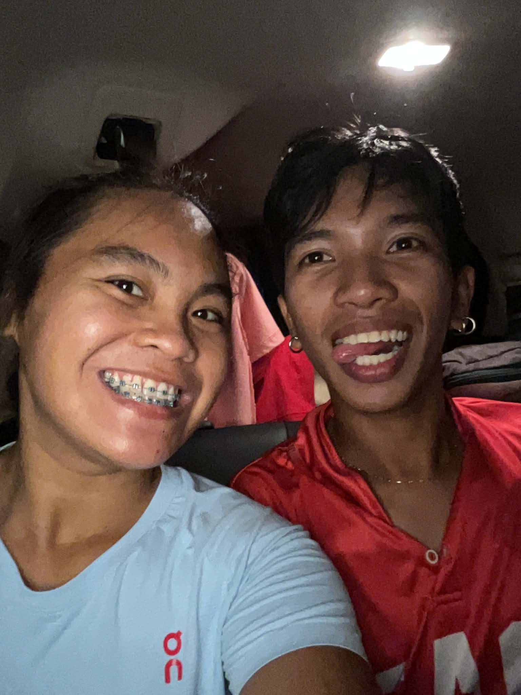
This picture holds something so special — it’s not about where we are or what we did, but about how we are together. You bring out the happiest, most carefree version of me. With you, I never have to pretend or be anyone else; I can just be me, and you love me all the same. Whether we’re out doing big things or just sitting in a car on the way home, every second feels like the best time ever. Our love isn’t made only of grand moments — it’s built of thousands of little moments like this: comfortable, playful, safe, and completely ours.
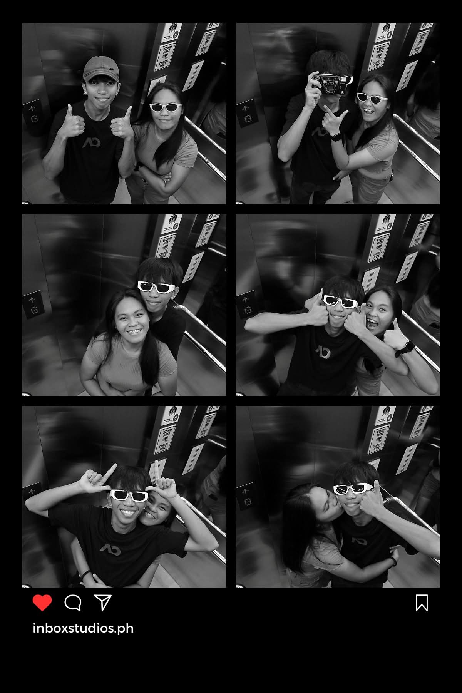
Every pose, every laugh, every silly face here — it all shows how free and happy I feel with you. You bring out the best and the happiest version of me, you know? With you, I never have to pretend or hide anything; I can just be me, and you love me fully. And I love you back — every part of you, inside and out — especially that beautiful soul of yours that I fell in love with.
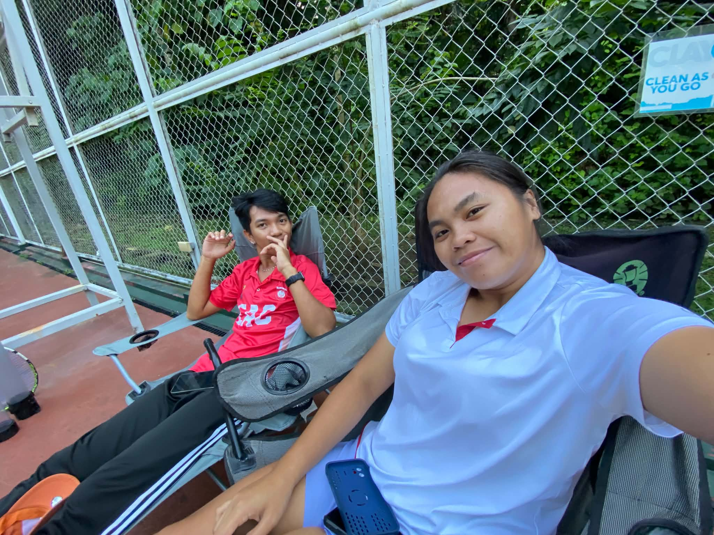
So this one naman is our last photo together while coaching and teaching side by side — before I went back here to Manila. 🥺💔 Honestly, I felt so sad that day kasi I had to leave again, ‘di ba? Mubalik na ko diri sa Manila, and I knew right away that it would be a long time before we get to be together again… until December pa jud ta magkita ulit! Grabe, the thought of being apart again hurt so much, but at the same time… every moment with you felt even more precious, like I wanted to freeze time lang so we could stay there a little longer.
The closer I get to you, the more I realize how much I need you. You complete me in every way. One more page, and then — everything.
Like, being near you always makes everything feel right, you know? And the closer I am to you, the more I see… you’re really everything I need. You fill every space in my heart, you make every day better, you complete me in every single way possible. And leaving you? It’s never easy talaga — kasi every time I go away, I realize even more: I don’t want to be far from you ever again. Every mile between us feels heavy, every day apart feels long, and every wait… feels like forever. But then I remember: we have December to look forward to, we have every promise we made, and we have this love that only grows stronger no matter how far we are.
You are my home, my peace, and my greatest joy. And no matter where I go — whether I’m here in Manila or there with you — you’re always in my heart, every single second. Every memory like this one keeps me going, keeps me strong, and reminds me: it’s all worth the wait. One more page lang, and soon… we’ll have everything — all the time, all the days, all the moments — just us, together, forever.
I love you so much — more than every distance, more than every wait, more than everything. Until December, and always — you are my only one.
I made this video — not just to collect our photos, but to hold every single moment we’ve ever shared. Every frame, every smile, every memory here tells a story only we know — of how we met, how we waited, how we loved, and how we kept choosing each other through it all. I put my whole heart into making this, because you deserve to see how truly beautiful you are to me — and how incredibly precious we are.
I made this video so you’ll never forget: every distance we crossed was worth it. Every day we waited brought us closer. Every laugh, every quiet moment, every tired but happy smile — they’re all pieces of the greatest blessing God ever gave me.
I made this video to remind you that you are my favorite beginning, my sweetest journey, and my forever destination. You’re the one I run to, the one I come home to, the one I want beside me through everything life brings. Whether we’re together or apart, whether near or far — my heart is always with you, beating only for you.
I made this video because words alone aren’t enough to say how much you mean. You taught me what love truly is — patient, kind, faithful, and endless. You stayed when things were hard, you waited when we were apart, you loved me through every season, and you never gave up on us. And I promise you: I will spend every day of my life proving that I will never give up on you either.
Every page we turn, every memory we add — it’s all leading to one beautiful truth: I don’t want a future without you in it. I want every sunrise, every sunset, every ordinary day and every special moment — all of them, only with you. You are my answered prayer, my greatest blessing, my home, and my forever love.
I made this video just to say: I love you. Thank you for existing. Thank you for choosing me. And thank you for being mine.
No matter where life takes us, no matter how long or short the days — I will always come back to you. I will always choose you. Today, tomorrow, and for every beautiful moment still ahead — only you. Always and forever. ♾️❤️
"I choose you. And I'll choose you over and over and over again. Without pause, without a doubt, in a heartbeat. I'll keep choosing you."
You are the most wonderful part of my every day. You are the person I want to share everything with. You are the one I love, the one I cherish, and the one I will always come back to.
Thank you for being you. Thank you for loving me. Thank you for being my everything.
I LOVE YOU SO MUCH ❤️
Today, tomorrow, and always — forever and eternity.
— Made with every beat of my heart, just for you —
I have written this a thousand times in my heart, but now I write it to you — thank you. Thank you for coming into my life at exactly the right moment, when I needed you most, and staying here ever since. Thank you for loving me not only when I am easy to love, but especially on the days when I am quiet, when I am tired, when I am stressed, when I am difficult to understand, and when I feel like I have nothing left to give. You never walked away. You never got tired. You never treated me as less than precious. And that — that consistent, unwavering, unconditional love — is the greatest gift you have ever given me.
Thank you for listening to me. For understanding me even when I struggle to find the right words. For holding me when I cannot speak. For calming my fears when my heart is racing. For reminding me that I am not alone. In a world full of noise, chaos, and uncertainty — you are my silence. You are my peace. You are the place where I can finally breathe, where I can be completely myself, and where I know — without any doubt — that I am safe, cherished, protected, and loved exactly as I am.
Thank you for being patient with me. For teaching me what real love looks like — not in fairy tales, but in real life. In the way you care. In the way you stay. In the way you never give up. You have shown me that love is not just a feeling — it is a choice you make, every single day. And I am so incredibly lucky that you choose me, over and over again.
Forever grateful to you ❤️
Paano ko ba sisimulan na sabihin sa iyo kung ano ang kahulugan mo sa akin? Hindi sapat ang mga salita. Hindi sapat ang mga tula. Kahit isang libong liham ay hindi pa rin sapat upang ganap na ipahayag kung gaano mo binago ang aking buhay. Bago ka dumating, ayos lang ako. Pero kasama ka, ako'y masaya. Totoo, malalim, ganap na masaya. Nagdala ka ng kulay sa isang mundong hindi ko alam na mapurol hangga't hindi ko ito nasilayan sa iyong mga mata. Nagdala ka ng init sa aking puso na hindi ko alam na nawawala hanggang sa hinawakan mo ang aking kamay.
Hindi ka lang basta aking boyfriend. Ikaw ang aking pinakamatalik na kaibigan. Ang aking ligtas na lugar. Ang aking pinakamalaking ginhawa. Ikaw ang unang naiisip ko pag gising ko, at ang huling naiisip bago ako matulog. Kapag may magandang nangyayari, ikaw ang unang tao na nais kong sabihin. Kapag may nangyayaring masama, ang simpleng pagdinig sa iyong boses ay nagpaparamdam na lahat ay magiging maayos. Ikaw ang taong nais kong ibahagi ang lahat — ang mga magagandang sandali, ang mga mahihirap na araw, ang mga nakatutuwang kaisipan, at ang mga tahimik na pangarap. Ang lahat ay tila mas maganda dahil ikaw ay bahagi nito.
Ikaw ang pinakamabait, pinaka-totoo, at pinaka-kahanga-hangang tao na aking nakilala. Napakalinis ng iyong puso. Napaganda ng iyong kaluluwa. Hinahangaan kita — hindi lang sa kung paano mo ako tratuhin, kundi sa kung sino ka. Tinitingala kita. Nirerespeto kita. At higit sa lahat, labis akong ipinagmamalaki na ako ang pinili mong mahalin. Ang mahalin ng isang katulad mo ay ang pinakamalaking karangalan ng aking buhay.
Please never forget this: ikaw ay sapat. Ikaw ay mahalaga. Ikaw ay minamahal nang higit pa sa sukat. At anuman ang mangyari sa buhay — kahit madali o mahirap — nandito lang ako. Palagi kitang pipiliin. Palagi akong mananatili sa iyong tabi. Dahil ikaw, aking mahal, ay sulit sa lahat.
You are my everything 💖
So here is my promise to you — gisulat gikan sa akong kasingkasing, ug gidesinyo aron magdugay hangtod sa kahangturan. Saad ko nga higugmaon ka, dili lang karon o ugma, kundi matag adlaw nga ako gipanalanginan nga buhi. Promise nako nga pilion ka — balik-balik, nga walay pagduha-duha, nga walay pagbasol, matag buntag saakoang pagmata ug matag gabii sa dili pa ko matulog. Ikaw kanunay ang akong pilion.
Saad nako nga magpabilin sa imong kiliran — sa mga hayag nga adlaw nga ang tanan nindot, ug sa mga bagyong adlaw nga ang kinabuhi mabug-at ug lisod. I will be your strength when you are weak. Ako mahimong nimong comfort when you are sad. I will listen when you need to speak, and I will hold you close when you need silence. Atong atubangon ang tanan nga magkauban — hand in hand, heart to heart — ug walay bisan unsang makabuwag kanato.
I promise to grow with you — to become better, just because I am with you. Suportahan ang imong mga damgo, magdasig sa imong kalampusan, ug yakapon ka sa dihang ang mga butang dili mag-ayo. Ako mahimong imong pinakadako nga tagahanga ug ang imong pinakaluwas nga dapit nga pahulayan. Promise nako nga respetohon ka, pahalagahan ka, pasidunggan ka, ug kanunay nga atimanon ang imong kasingkasing nga may labaw nga pag-atiman — tungod kay imong gisaligan ako sa labing bililhon nga butang nga imong gihuptan, ug dili ko kana igakalimtan.
I promise to be patient, to be understanding, and to always speak to you with kindness and love. I promise to forgive, to learn, to grow, and to keep making this relationship better every single day. And most of all — I promise to love you exactly as you are. I will never ask you to change who you are. Because who you are — your heart, your soul, your mind, your laugh, your kindness — is exactly what I fell in love with. And I love you more and more each day.
So this is me. This is my heart. This is my promise. Today, tomorrow, and always — I am yours. Completely, wholly, and forever. Every piece of me belongs to you, now and for all the days of my life. There is no one else I would rather walk with, no one else I would rather love, and no one else I would rather call my forever. You are my beginning, my middle, and my beautiful end. And with every beat of my heart, I promise — I will love you faithfully, endlessly, and with everything I have.
Yours, and only yours, forever and always ❤️
Kapag tinitingnan kita, hindi ko lang nakikita ang kasalukuyan — nakikita ko rin ang aking nakaraan, kasalukuyan, at hinaharap, lahat sa iisang tao. Ikaw ang sagot sa mga panalangin na hindi ko man nasabi nang malakas, ngunit laging nasa puso ko. Bago ka dumating, hindi ko alam na ganito pala ang magmahal at mahalin nang totoo, wagas, at walang pag-iimbot. Ngayong nasa piling na kita, hindi ko na maipagpapalit ka sa kahit anong yaman o ganda ng mundo.
Salamat sa pagiging tapat. Salamat sa pagiging totoo. Salamat sa pagtanggap sa akin — kasama ang lahat ng aking kahinaan, takot, at kakulangan. Sa iyo, hindi ko kailangang magpanggap. Hindi ko kailangang magbago. Tanggap mo ako nang buong-buo, at pinaramdam mo sa akin na ako ay sapat, mahalaga, at minamahal — higit pa sa aking inaakala. Iyan ang pinakamalaking biyaya na ibinigay mo sa akin: ang pagmamahal na nagpalaya sa akin.
Kahit sa mga araw na tila maulap at mahirap, ikaw pa rin ang aking pinipili. Ikaw pa rin ang aking pahinga, lakas, at pag-asa. Ang iyong ngiti ay sapat na upang mapawi ang aking pagod. Ang iyong tinig ay nagbibigay ng kapayapaan sa aking puso. At ang iyong pagmamahal — iyon ang aking yaman na hinding-hindi ko ipagpapalit sa kahit ano.
Pangako ko sa iyo: mananatili ako sa iyong tabi. Hahawakan kita sa bawat pagkakataon. Iaalay ko ang aking pag-unawa, respeto, at pagmamahal araw-araw. Ikaw ang aking tahanan — at hangga't ikaw ay nariyan, nasa tahanan ako kung saan man tayo naroroon.
With all my love for you ❤️
I say this with all honesty and heart: you are the most beautiful thing that has come into my life. Even though I may not say it to you every day, I hope you feel — in every glance, word, and action of mine — how much you mean to me. Not just for what you have, but for who you are: kind, honest, caring, and full of hope.
You are my inspiration. Because of you, I want to be a better person. You fill my heart with a joy that I cannot explain with words alone. When I am with you, everything seems lighter. When we are together, I know I can handle anything — because you are there, and that is the strength I need.
As time goes on, I know that many things will change. The weather, situations, and circumstances may shift. But one thing is certain and will never change: my love for you. It will deepen, strengthen, and remain — steadfast as a rock, and eternal like the stars. You are my now, and you are my tomorrow.
So, please accept this letter as proof of my commitment: in hardship and comfort, in sorrow and joy, from beginning to end — it’s you and only you. No one else. No one greater. You are my love, my life, and my forever.
Forever, Only You💖
There are moments when I look at you — really look at you — and I find myself completely lost for words. Not because there is nothing to say, but because there is simply too much. Too much love, too much gratitude, too much joy, and too much wonder that you are actually mine. Sometimes I wonder how I got so lucky — how someone like me was blessed enough to cross paths with someone like you, to capture your heart, and to call you mine. And then I realize: you are not just a part of my life. You are the best thing that has ever happened to it.
Before you came into my life, I thought I knew what love was. I thought it was simply a feeling — something sweet, something happy, something wonderful. But you taught me what love truly is. You showed me that love is not just about the happy days and the beautiful moments. It is about showing up even when things are hard. It is about staying when others would have walked away. It is about holding my hand when I am afraid, calming my heart when I am worried, and reminding me that I am not alone even when the world feels heavy. You loved me not only at my best — you loved me even more at my worst. You loved me when I was quiet, when I was tired, when I was stressed, when I was difficult to understand, when I had nothing left to give — and you loved me anyway. And that kind of love — consistent, patient, unconditional, and true — is the greatest gift you have ever given me.
Thank you. Thank you for being my safe place. Thank you for being the one person in this whole world before whom I never have to pretend, never have to be strong, never have to hide. With you, I can simply be me — every piece of me, the bright and the broken — and you love me all the same. You make me feel seen. You make me feel understood. You make me feel cherished, protected, and treasured beyond anything I ever imagined I could be. In your arms, I have found peace I did not even know I was searching for. In your heart, I have found a home I will never tire of returning to. And in your love, I have found the strength to keep going, to keep hoping, and to keep believing that everything will be alright — simply because you are by my side.
Thank you for every memory we have built together. From the very first moment we met, to every laugh we shared, every place we visited, every mile we traveled, and every moment we had to be apart — every single one of them holds a special place in my heart. Whether we were together or far away, whether we were celebrating or simply resting side by side, every moment with you became precious to me. I learned that love is not measured by how much time we have together — it is measured by how deeply we love each other in every moment we share. And no matter how far apart we may be, no matter how many miles lie between us, my heart is always right there with you. You are the first thought when I wake up and the last thought before I fall asleep. You are in every prayer, in every hope, and in every dream I hold for the future.
I want you to know what you truly mean to me. You are not just my love — you are my best friend. My greatest blessing. My answered prayer. My sweetest dream. You are the person I want to share everything with — the good news and the bad days, the laughter and the tears, the adventures and the quiet evenings at home. You are the one I run to when I have something wonderful to tell, and the one I hold onto when everything feels overwhelming. You make the beautiful moments twice as bright, and the hard times half as heavy — simply because you are there. And I promise you: I will always be that person for you too. I will always be your listener, your comfort, your biggest cheerleader, and your safest place to rest.
So here is my promise to you — not just for today, not just for tomorrow, but for all the days of my life: I promise to love you. Not just when it is easy, but always. Not just when you are happy, but especially when you are tired, discouraged, or unsure. I promise to stand by your side through every season — through the sunshine and the storms, through the joy and the sorrow, through the laughter and the silence. Wherever life takes us, whatever happens, I will be right there beside you — hand in hand, heart to heart — facing everything together.
I promise to choose you. Every single day. Over and over again. Without hesitation, without doubt, without regret. I will choose your kindness over my pride. I will choose your peace over my impatience. I will choose your happiness over my own comfort. And every morning when I wake up, and every night before I sleep — I will choose you all over again, because loving you is the easiest and most beautiful choice I have ever made.
I promise to grow with you. To support your dreams, to believe in your potential, and to stand beside you as you become everything you were created to be. I will cheer for your victories, comfort you in your losses, and remind you how wonderful you are whenever you forget. I will never hold you back — I will always help you fly higher, reach further, and shine brighter — because seeing you happy makes me happier than anything else in this world.
I promise to be patient, kind, and understanding. I promise to listen when you speak, and to hold you close when words are not enough. I promise to forgive, to learn, to grow, and to keep making us better — every single day. And most of all — I promise to love you exactly as you are. I will never ask you to change who you are. Because who you are — your heart, your soul, your laugh, your kindness, your gentleness, your strength — is exactly what I fell in love with. And I love you more and more with every passing day.
And finally — I promise to stay. No matter how hard life gets, no matter how far apart we may sometimes be, no matter what challenges may come our way — I will stay. I will not walk away. I will not give up. Because you are worth every mile, every tear, every wait, and every sacrifice. You are worth everything. And I would choose you — over and over and over again — in this life and the next.
So please, my love — never forget this. You are loved. You are cherished. You are precious beyond measure. You are enough — exactly as you are. And no matter where life takes us, no matter how many years pass by, no matter how much we may change — my heart will always be yours. Completely, faithfully, endlessly, and forever.
I love you. Today, tomorrow, and always. ❤️
I want to tell you something that comes from the very depths of my heart — something I want you to carry with you always, so you never have to wonder how much you mean to me. You are my very first boyfriend. You are the first person I have ever loved this deeply, the first person who has ever made my heart feel this full, this safe, this truly at home. And with all my heart, I promise you — you will be my last. There will never be anyone before you, and there will never be anyone after you. Because from the moment you came into my life, I knew — this is the love I have been waiting for my whole life. This is the one my heart was made for.
I am not with you just to pass time. I am not loving you just for today. I am not holding your hand just to see where the road leads. No — I chose you because I already know where my future lies. It lies with you. Every dream I dream, every plan I make, every hope I hold close — you are in all of them. When I imagine waking up in the morning, it is your face I see. When I imagine building a home, it is with you. When I imagine the years stretching out ahead of me — full of joy, full of challenges, full of beautiful ordinary days — I do not see myself walking them alone. I see myself walking them beside you. Always. Without a single doubt. Because you are my destination. You are my forever.
I love you with the intention to marry you. I love you with the promise that one day, I will stand before everyone I love and say — this is the person my heart chose. This is the one I will love, cherish, and keep for the rest of my life. I am not just dating you — I am choosing you as my partner for life. I am choosing you as the person I want to build everything with. I want to share every joy with you. I want to walk through every hard day with you. I want to laugh with you until our sides hurt, and I want to hold you when tears fall. I want to learn with you, grow with you, and become the best version of myself — all because I am by your side.
And when many years have passed — when our hair has turned soft and white, when our steps have become slower, when we have lived a thousand beautiful moments and weathered a thousand storms together — I still want to be right there beside you. I want to be the one holding your hand. I want to be the one who knows every line on your face, every story in your eyes, every quiet way you have of loving me. I want to grow old with you. I want to see you at every age — the wonderful man I fell in love with today, and every beautiful version of you that is yet to come — and I promise you, I will love you just as deeply, just as truly, just as faithfully, in every single year.
I do not need to guess what my future holds. Because I already know. It holds you. It holds us. It holds a lifetime of waking up beside you, of building our little world together, of loving you more with every passing day. There is no one else I want. There is nowhere else I want to be. Because you are my first love, my one true love, and — with everything I am — you will be my last love too. Today belongs to us. Tomorrow belongs to us. And all the years that follow — they belong to us too.
So please remember this, always: I am yours. Completely. Faithfully. Forever. Not just for now — but for all the days of my life. I chose you to be my today, my tomorrow, and my forever. I chose you to walk beside me, to love me, to grow old with me — and I promise, I will spend every single day proving to you that you were the best decision I ever made, the greatest blessing I ever received, and the love I will cherish until my very last breath.
I love you. With all my heart. Today, tomorrow, always — and forever more.
Yours alone, today and always ❤️
I write this letter with a heart full of sincerity — to speak words that I have carried within me, to ask for your forgiveness, and to offer you the deepest gratitude I could ever feel. There have been moments when I fell short. Moments when I spoke too hastily, acted without thinking, or made choices that caused you hurt or disappointment. I know that I am not perfect, and I know that at times, I have not been the partner you deserve — and for every single one of those moments, I am truly and deeply sorry.
I apologize for every word that hurt you. For every action that made you feel unappreciated, unheard, or less loved than you should have been. I apologize for my shortcomings, for my impatience, for my moods, and for the times when I let my own worries overshadow the care I should have given you. It was never my intention to cause you pain. You have always been nothing but gentle, kind, and patient with me — and I am sorry when I failed to give you the same kindness in return. Please forgive me for all the ways I have disappointed you, knowingly or unknowingly. I am learning, and I am growing — and I promise to do better, to be better, simply because you deserve the very best.
And alongside my apologies — please accept my deepest, most heartfelt gratitude. Thank you for staying. Thank you for not walking away when things became difficult. Thank you for understanding me even when I was difficult to understand. Thank you for correcting me with love instead of anger, for reminding me of my worth even when I stumbled, and for giving me chance after chance to be better. You have shown me patience that I did not always earn, and love that I will never be able to fully repay — but I will spend every day of my life trying to deserve it.
Thank you for accepting me — not just at my best, but especially at my worst. Thank you for seeing the good in me even when I could not see it myself. Thank you for your kindness, your endurance, your faith in us, and your unwavering heart. You have taught me so much — about love, about patience, about understanding, and about what it truly means to stay. And because of you, I am becoming a better person — not because I have to be, but because you inspire me to be.
So please, let this letter be both my apology and my promise. I may make mistakes, but I will never stop trying to make things right. I may stumble, but I will always find my way back to you — and back to being the person you fell in love with. I will listen more carefully, speak more gently, love more faithfully, and cherish you more deeply — every single day. You are too precious to me to ever take for granted, and too important to ever treat with anything less than the utmost care.
Thank you for loving me despite my flaws. Thank you for being my strength when I was weak. Thank you for never giving up on us. And please — forgive me for every time I hurt you. I love you more than words can express, and I will spend the rest of my life proving that to you — not just in words, but in every action, every choice, and every beat of my heart.
Yours with love, regret, and endless gratitude ❤️
In a world that can be so loud, so hurried, and so overwhelming — you are my quiet. You are the calm that settles within me the moment I hear your voice. You are the place where I can lay down my worries, set aside my fears, and simply breathe. No matter how heavy the burden I carry, no matter how restless my heart may be — one look at you, one word from you, one gentle touch from you — and everything feels lighter. Everything feels alright.
You are my safe place. With you, I never need to pretend to be stronger than I am. I never need to hide my tears or mask my doubts. I can come to you broken, tired, and afraid — and instead of judgment, I find comfort. Instead of criticism, I find care. You hold me together when I feel like falling apart. You remind me of who I am when I have forgotten my own worth. And you make me feel protected — not just by your strength, but by the gentleness of your heart.
I do not know what I did to deserve someone like you — someone who listens so patiently, who understands so deeply, and who loves so gently. You have given me a kind of peace that I never found anywhere else — a peace that comes from knowing I am loved, that I am understood, and that I will never have to face the world alone. As long as I have you, I have a home. As long as I hold your hand, I have courage. And as long as you love me, I have everything I will ever need.
Thank you for being my shelter. Thank you for being my rest. Thank you for being the one person before whom I can be completely, unapologetically myself — and still be loved more than I ever thought possible. I love you, and I will forever be grateful that of all the places in this world — your heart is where I have found my peace.
Always safe in your love ❤️
Love, I have come to realize that love is not merely a feeling — it is a choice. And every single day, without hesitation, without regret, and without a single doubt — I choose you. I choose your kindness over everything else. I choose your smile over a thousand other beautiful things. I choose your heart because it is the only place where I truly belong.
But more than that — I am endlessly grateful that you choose me too. That amidst all the people in this world, with all our differences and all our imperfections — you chose me. You chose to love me, to stay with me, to build with me, and to walk beside me through every season. There is no greater honor, and no greater joy, than being the person you chose to share your life with.
I choose you on the bright, happy days — and I choose you even more on the days when things are difficult. I choose you when we are laughing, and I choose you when we are learning to understand each other. I choose you today, I will choose you tomorrow, and I will choose you for as long as I live — because loving you is the easiest, most beautiful, and most meaningful choice I have ever made. And I will never, ever regret choosing you.
Thank you for choosing me — over and over again. Thank you for staying when you could have left. Thank you for loving me when I was hard to love. I promise to spend every day proving that your choice was the best one you ever made. I love you — today, with all my heart, and forever.
Forever your choice, forever yours ❤️
It is not only your love that draws me to you — it is who you are. It is your character. It is your strength. It is the goodness in your heart and the integrity in your actions. I look at you, and I do not just see the person I love — I see the person I respect, the person I look up to, and the person who inspires me to be better every single day.
I admire your kindness — how you treat everyone with gentleness, how you care deeply, and how you always try to do what is right. I admire your patience — how you remain steady when I am confused, how you stay calm when things are difficult, and how you guide me with wisdom rather than force. I admire your heart — so pure, so generous, and so true. You carry yourself with such grace, and you love with such honor — and I am endlessly proud to be the one standing by your side.
Please never forget how highly I think of you. Never doubt your worth, your goodness, or your strength. When the world makes you feel small — remember that to me, you are extraordinary. When you feel unsure — remember that I believe in you more than I believe in almost anything. You are capable of wonderful things, and it is the greatest privilege of my life to witness you grow, to support your dreams, and to stand beside you as you shine.
I love you — not only for how you love me, but for who you are. You are truly remarkable, and I am so incredibly proud to be yours.
With deepest respect and admiration ❤️
There may be days when we are apart. There may be miles between us, hours apart, and moments when I cannot reach out and hold your hand. But please — never doubt this: distance can only separate our bodies. It cannot separate our hearts. No matter how far apart we may be, no matter how long the days feel without you — my heart is always right there with you. Every beat of it belongs to you, and every thought of it turns toward you.
Distance has taught me something precious — that what we share is not dependent on being together physically. It is deeper than that. It is stronger than that. It is a bond that time cannot weaken, and space cannot break. We may be apart now, but we are walking toward the same future. We may be looking at different skies, but we are under the same stars — and we are dreaming the same dream.
So wait for me, as I will wait for you. Hold on, as I will hold on. Every day that passes without you is simply one day closer to being together forever. And when we are finally never apart again — I will hold you so tightly, and cherish you so deeply, that every moment of waiting will feel like it was worth it a thousand times over. Until then — remember: I am yours. My heart is yours. And nothing — no distance, no time, and no force in this world — will ever change that.
I love you — near or far, today and always.
Always with you, heart to heart ❤️
I believe in you. I believe in your strength. I believe in your potential. I believe in the goodness within you, and I believe in the wonderful things you will achieve in this life — not just because you are capable, but because your heart is true. Even on days when you doubt yourself — please remember that I never will. I will always believe in you, more than you know.
And I believe in us. I believe in what we have built — slowly, carefully, with patience and love. I believe in the bond we share — something rare, something real, something that will last. I believe that together, we can face anything. That together, we can overcome any difficulty. That together, we can build a future brighter than either of us could ever imagine alone.
I do not know exactly what the future holds. There may be challenges. There may be changes. There may be days that test us in ways we cannot yet see. But I know this with absolute certainty — as long as we have each other, we will be alright. Because you and I — we are stronger together. We are wiser together. And we are happier together. Hand in hand, heart to heart — there is nothing we cannot face, and no dream we cannot reach.
So keep your faith strong. Keep moving forward. And know that I am right beside you — believing in you, cheering for you, loving you, and walking with you — every step of the way.
Always believing in you and us ❤️
I do not love only the best version of you — I love all of you. I love the strength you show the world, and I love the gentleness you show only to me. I love the confidence you carry, and I love the moments when you let yourself be vulnerable and rest in my care. I love your laughter, your kindness, your wisdom — and I also love your quiet days, your thoughtful silences, and the parts of you that you rarely show to anyone else.
I love your strengths, and I love your flaws — because they are yours. I love your dreams, and I love your fears — because they make you who you are. I do not love you conditionally — I do not love you only when you are perfect, or when things are easy. I love you completely — your past, your present, your future. I love you on your best days, and I love you just as much on the days when you feel less than your best.
I will never ask you to change who you are. I will never ask you to be someone you are not. Because the person you are — exactly as you are — is the person I fell in love with. And the person you are becoming — with all your growth, all your changes, and all your beautiful unfolding — is the person I will love even more, year after year. You do not need to be perfect to be worthy of my love. You only need to be you — because you, just as you are, are more than enough.
Please never feel that you must hide or pretend. I have seen your heart, and I love it — every piece, every part, every shadow and every light. I love you — wholly, truly, and exactly as you are.
Loving every part of you, always ❤️
Sometimes I look at you and realize that a lifetime will not be enough time to love you — not nearly enough. We have so much to see, so much to do, so much to share — and even if we lived a hundred years, I know I would still want more. More moments with you. More laughter with you. More quiet days, more beautiful memories, and more time simply loving you. Because every moment spent with you feels too short — and yet, it feels like forever in the best way possible.
If I could choose, I would love you not just for this lifetime — but in every lifetime that could ever be. I would find you again, and fall in love with you again, and choose you all over again — in every era, in every world, and in every life. Because loving you feels like what I was always meant to do. Being with you feels like returning home — to a place I never knew I was searching for, until I found you.
So when I say "forever" — I do not mean it lightly. I mean every day of my life, and every day beyond that. I mean through every season, every change, every joy, and every sorrow. I mean until my last breath — and even then, I believe my soul will continue to love you long after I am gone. Because what I feel for you is not just for this life — it is eternal. It is written in my heart, and it will remain there — forever.
Thank you for giving me a love so beautiful, so deep, and so true that forever does not feel long enough. I love you — today, tomorrow, all the days of my life, and beyond.
Yours forever, and then some more ❤️